| 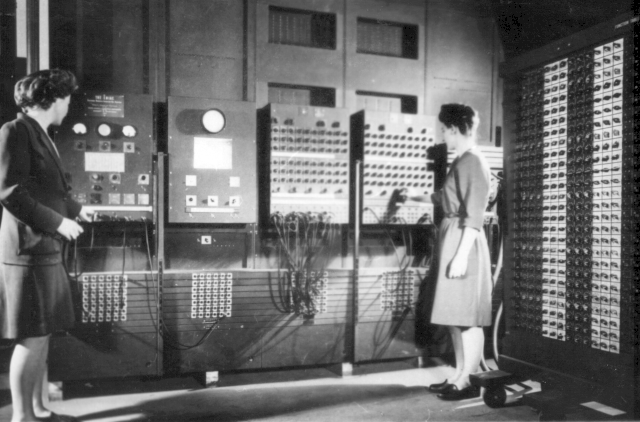 | 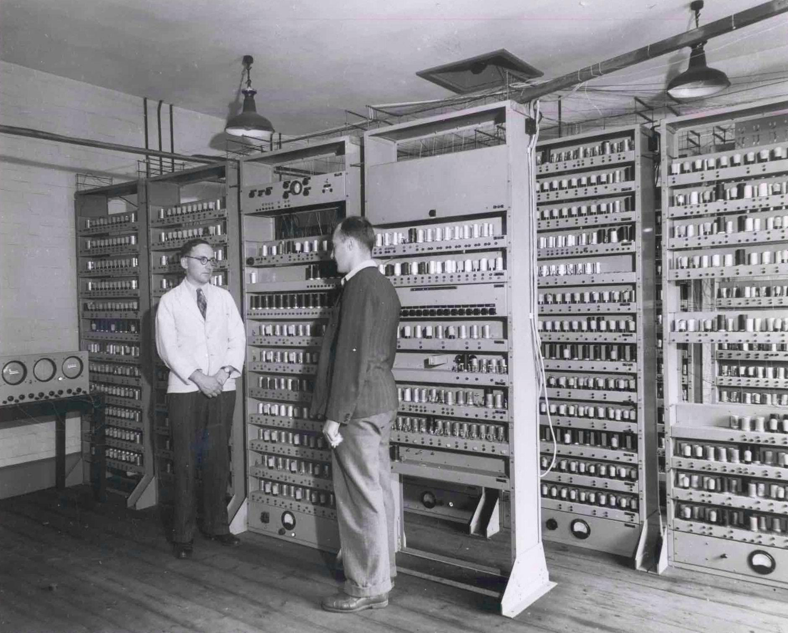 | 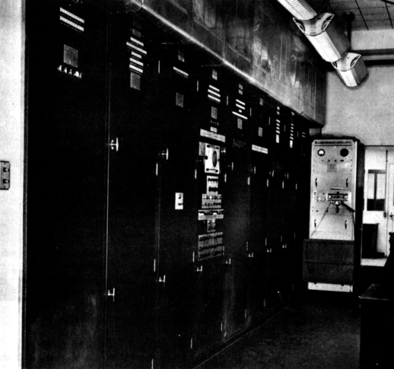 | 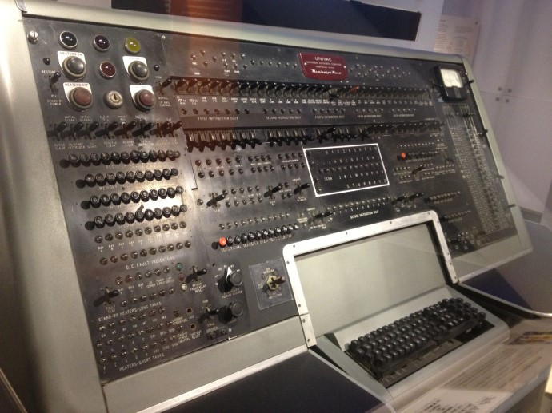 |
| 1946년 최초의 전자식 컴퓨터 |
1949년 최초의 프로그램 내장 방식 컴퓨터 |
1950년 이진수 사용 컴퓨터 |
1951년 최초의 상업용 컴퓨터 |
| 세계 최초로 진공관이 사용된 다용도 전자식 컴퓨터인 에니악이 탄생했다. 십진수를 사용하며, 1초에 5,000번의 가감 연산과 360번의 곱셈, 170번의 나눗셈을 수행할 수 있었다. |
윌크스는 세계 최초의 프로그램 내장 방식의 컴퓨터인 에드삭을 개발하였다. | 모클리와 에커드는 에니악을 개량하여 에드박을 만들었다. 에드삭에 이어 폰 노이만이 고안한 프로그램 내장 방식을 적용하였고, 이진법을 채택하였다. |
미국의 에커드 모클리 사(현재 유니시스 사)에서 에드박을 발전시켜 최초의 상업용 컴퓨터인 유니박-I를 개발하였다. 미국의 조사 통계국에 설치하여 사용되었다. |
| 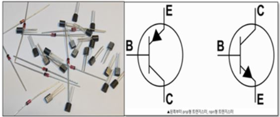 |
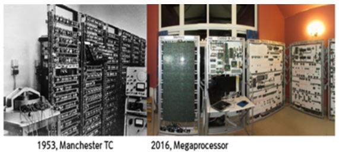 |
|
1947년 개발된 트랜지스터는 진공관을 대체했고 1958년부터 컴퓨터에도 접목하기 시작했다.2세대 컴퓨터 운영제체와 고급프로그래밍 언어 등장하였다. 제2세대 컴퓨터 시기에 하드웨어를 제어하는 운영체제가 처음으로 도입되었다. 실질적인 작업을 위해 쓰인 최초의 운영체제는 1956년, IBM 704를 위해 개발된 GM-NAA I/O로 실행 중인 프로그램이 완료되면 자동으로 새 프로그램을 실행하는 기능을 수행했다. 사람들이 사용하는 언어와 비슷한 포르란과 코볼이라는 고급 수준의 프로그래밍 언어도 개발되어 이용되었다. 1957년 개발된 최초의 프로그래밍 언어인 포트란은 과학기술 분야에 적합하며 1959년 설계된 코볼은 사무처리용으로 개발된 프로그래밍언어이다. |
|
| 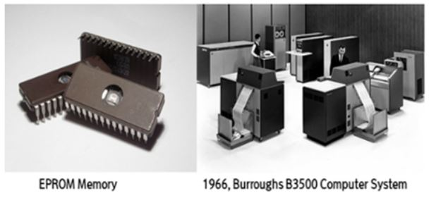 |
기억 장치에 직접회로를 사용함으로써 컴퓨터는 소형화가 되었고, 반면 기억 용량은 커졌으며, 주기억 장치는 직접회로와 RAM, ROM을 사용되었습니다. 프로그램 언어는 LIPS, PASCAL, BASIC, PL/1이 사용되었으며, 다중 프로그래밍, 실시간 처리 시스템, 시분할 시트렌 등의 운영 시스템이 도입되었습니다. 이러한 기능들은 인간과 기기간의 대화를 가능하게 하여 영상 표시 장치(CRT) 등 단말기에 의한 자료 처리가 보편화 되었습니다. 대표적으로는 IBM S/360 계열, 유니박 1108, CDC 6000 계열, Burroughs 5500, Honeywell 200 계열 등이 있습니다. |
| 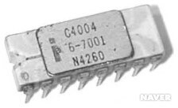 |
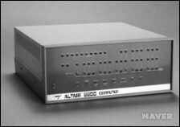 |
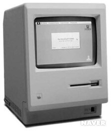 |
| 1971년 최초의 마이크로프로세서 |
1975년 최초의 개인용 컴퓨터 |
1984년 애플사의 개인용 컴퓨터 |
| 고밀도 집적회로와 초고밀도 집적회로 기술로 인해 하나의 칩으로 된 중앙처리장치인 마이크로프로세서(microprocessor)가 개발되었다. 이 마이크로프로세서의 개발은 개인용 컴퓨터를 대량으로 생산할 수 있는 획기적인 계기가 되었다. 최초의 마이크로프로세서는 1971년에 개발된 인텔(Intel) 4004다. | 최초의 개인용 컴퓨터는 1975년 MITS사 대표인 로버츠(Ed Roberts)가 개발한 알테어(Altair) 8800이다. | 애플사는 1984년에 매킨토시(Macintosh)를 시판하기 시작한다. 매킨토시 운영체제는 텍스트 명령어를 사용하는 IBM PC의 MS-DOS와 달리 마우스와 그래픽을 이용하는 사용자 환경을 제공하였다. 이로 인해 출시 1년만에 30만 고객을 확보하게 된다. |
| 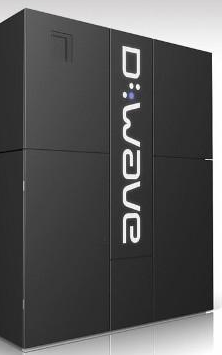 |
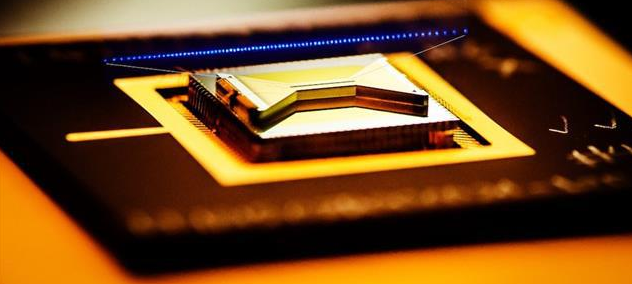 |
중첩(superposition)과 얽힘(entanglement)등 양자 물리학의 원리를 이용하여 다수의 정보를 동시에 연산할 수 있도록 구현된 새로운 개념의 컴퓨터이다. 기존의 0 아니면 1로만 저장할 수 있는 컴퓨터의 비트(bit)대신 0, 1, 그리고 0과 1의 조합을 동시에 나타내고 저장할 수 있는 양자 비트(quantum bit)인 큐비트(qubits)를 이용하여 데이터를 처리한다. 큐비트는 00, 01, 10, 11을 동시에 가질 수 있다. 이러한 두 상태의 중첩이 가능해짐에 따라 양자 컴퓨터는 기존 컴퓨터보다 데이터 처리의 속도가 훨씬 빠르다. 양자 컴퓨터가 상용화된다면 그 성능은 슈퍼컴퓨터의 성능보다 최소 1억 배 이상으로, 슈퍼 컴퓨터가 150년 걸려 계산할 것을 단 4분 만에 끝낼 수 있다고 한다. 양자컴퓨터의 연산속도는 병렬처리를 통해 '큐비트' 개수당 2의 제곱으로 증가한다. 2019년, 구글은 큐비트 50개로 양자컴퓨터 칩인 시커모어를 만들어 슈퍼컴퓨터의 한계를 뛰어넘었다. 양자컴퓨터는 월등히 빠른 연산속도를 기반으로 데이터 처리량이 급속히 늘어나고 있는 사물 인터넷(IoT), 빅데이터, 인공지능(AI) 등의 분야에 활용될 것으로 기대된다. |
|